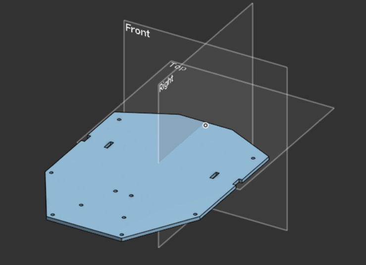
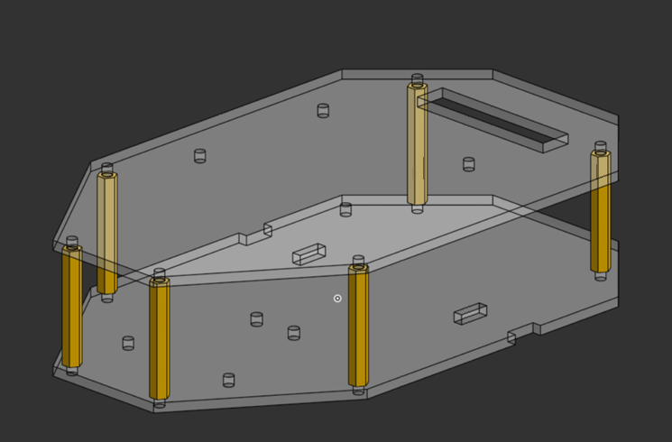
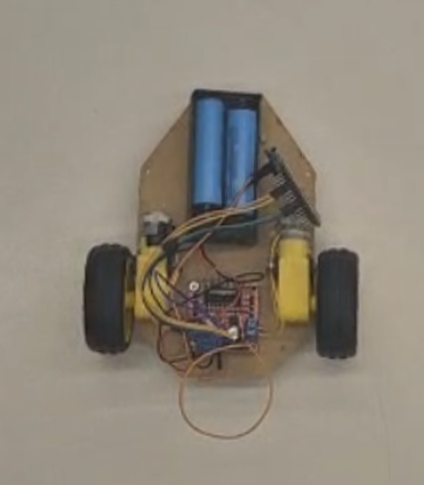
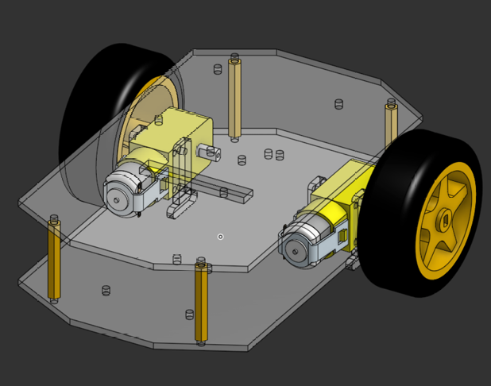

Prototipo inicial
Semana 2 (3/9/26 - 9/9/26)
La primera meta del área de mecánica fue tener cuanto antes un diseño básico del robot sobre el cual los compañeros de programación y electrónica pudieran empezar a hacer sus pruebas, y que además sirviera de base para ir mejorándolo.
Objetivo
Contar con una base física donde montar motores, controlador y sensores para empezar pruebas.
Tener un diseño en CAD sobre el cual iterar.
Explorar un sistema de movimiento con orugas (ver Sistema de orugas (descartado)).
Base del robot
Se diseñó en OnShape una primera base, se cortó en MDF con RDWorks y se ensambló junto con el compañero de electrónica. Este prototipo fue el que se utilizó durante las primeras pruebas de programación y electrónica.


Primer prototipo de base para el robot - 3/9/26


Primer ensamble del prototipo para pruebas - 4/9/26


Prototipo físico actual - 8/9/26
Nota
Este prototipo sirvió para las pruebas de las áreas de programación y electrónica en ese momento. No es el diseño final.
Ensamble en CAD
Paralelamente se fue armando el ensamble completo en el CAD.


Ensamble actual del robot - 9/9/26
Nota
Faltaba agregar al CAD los componentes y sensores que se iban a utilizar. Se estaba esperando a que el equipo definiera cuáles componentes usar para agregarlos al ensamble.
Primeros prototipos de orugas
En esta etapa también se diseñaron los primeros eslabones de cadena y un primer sprocket para un mecanismo de movimiento con orugas.

Primer prototipo de eslabones de cadena - 9/9/26

Primer prototipo de sprocket - 9/9/26
Advertencia
La funcionalidad de este diseño de sprocket no se llegó a probar físicamente. Solo existía en diseño.
Siguiente paso
Con la base lista para pruebas, la siguiente semana se desarrolló una versión con más detalle: Versión 1.